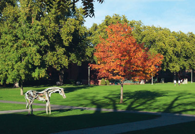
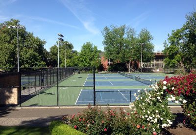

A CAMPUS WORTH LISTENING TO
Every place
has a story.
Walk into one.
Meet Whitman through the stories and sounds around you. A little curiosity. A pair of headphones. Your own pace.
Location connected. You’re ready.
2 places to discover Best with headphones
46.0719° N 118.3280° W
01StyxART & CAMPUS LIFE
02 Outdoor Courts

You’re getting closer.

Same campus.
A new way to hear it.
A new way to hear it.
A STUDENT PROJECT, MADE FOR EXPLORING.Listen. Look around. Stay curious.
YOUR CAMPUS, AT YOUR PACEFollow your curiosity.
YouAudio landmark
Map tiles aren’t available. Landmark distances and audio still work.